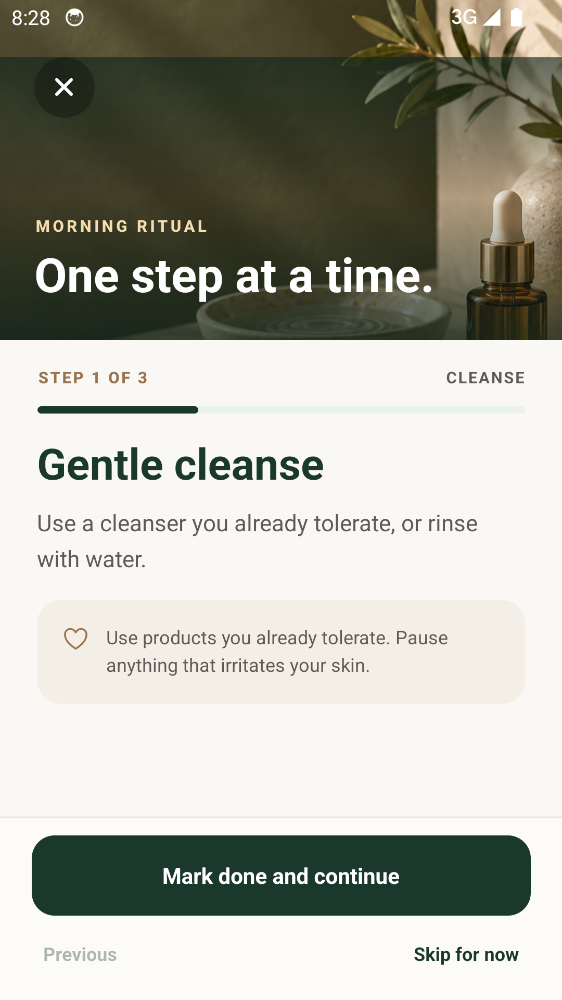
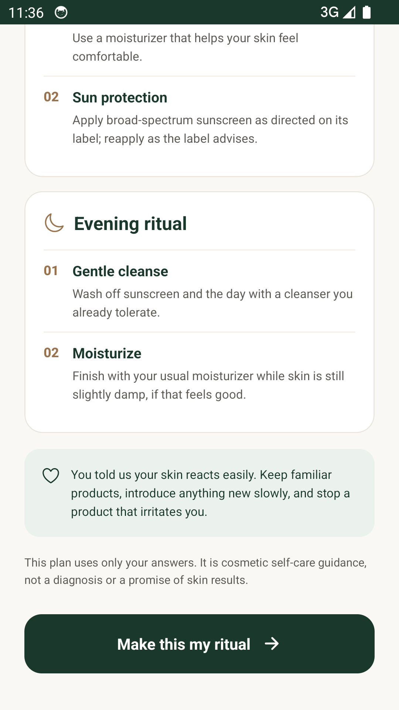

Your private skincare routine app
Make space
for your skin.
Build a morning and evening routine around products you own. Follow it one step at a time, without taking a selfie.
Currently in private testing on iOS and Android.
The idea
Skincare feels different when it belongs to you.
ASMR Beauty Pro is a guided skincare routine app for morning and evening. Begin with a few answers, preview a starting plan, then adjust each step around products you already own.
Inside the app
One step.
Then the next.
A guided morning or evening ritual keeps the next step in focus. Adjust the routine around products you already know, mark what you complete, and return when you are ready.
See how it works

The rhythm
Begin gently.
Keep it yours.
- 01
Tell us what matters
Answer a few questions about your skin feel and routine habits. Preview a starting morning and evening plan before making an account.
- 02
Make room for your products
Edit your steps and keep a private shelf of what you own, including opening dates. Your routine can change with you.
- 03
Notice the days you show up
Check off completed steps, add an optional daily skin-feel choice, and look back at your last 14 days. Reminders stay on your device if you turn them on.
The field notes · 01
A useful place to start.
A routine you can actually return to.
What belongs in a simple morning and evening skincare routine? Begin with the essentials, learn the order, and make room for what your skin tolerates.
Read the routine guideAn everyday practice
Less noise.
More intention.
Care can be simple: the products you already use, a sequence you understand, and a quiet moment to follow through.
Your plan is cosmetic self-care guidance, never a diagnosis or a promise of skin results.
The details matter
Private by design.
Clear by choice.
No face photo to begin
The current app starts from your answers. It does not scan your face or provide AI coaching.
A clear membership
Membership begins through Apple or Google checkout. If a 14-day trial is available to your store account, the store shows it with the renewal price before you confirm. A valid store payment method is required.
Control over your account
Edit routine steps and shelf entries, or delete your account and saved app data in Settings. Read the deletion steps.
Good to know
Questions,
answered plainly.
Do I need to take a selfie?
No. The current app builds a starting routine from your answers. It does not request face photos, run a skin scan, or provide an AI coach.
Can I change my routine?
Yes. Morning and evening steps are editable, so you can shape the ritual around products you already own and tolerate.
How does the store trial work?
After previewing a starter plan and verifying your account, choose a store membership. If your store account is eligible and the offer is enabled, Apple or Google may show a 14-day trial on the annual plan. A valid store payment method is required before the trial starts. The subscription renews at the displayed price unless you cancel in store settings before the trial ends. If no trial appears, checkout starts a paid plan. The app is currently available only in private testing.
What can I track?
You can mark routine steps complete, review your last 14 days, and make an optional daily skin-feel check-in. You can edit or remove today’s check-in. The private product shelf keeps optional opening dates. None of these records measures skin improvement or provides a diagnosis.
Does the product shelf tell me when something expires?
No. You can save a product’s name, category, optional brand, and opening date, then edit or remove it. The shelf does not calculate expiry or decide whether a product is safe. Follow the label and maker’s instructions. Learn how to use an opening date.
How do I cancel or delete my account?
Cancel a subscription in your Apple or Google store account. Delete your app account and saved cloud data in Settings. These are separate actions. See the full instructions.
A note on availability
A quieter routine
is on its way.
The iOS and Android apps are in private testing. Public App Store and Google Play downloads are not available yet. We will add direct store links here when the release is live.
Ask about app access